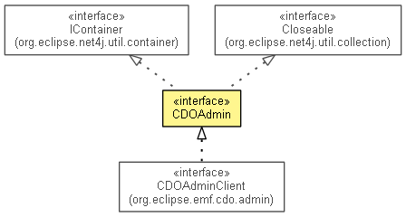

org.eclipse.emf.cdo.common.admin
Interface CDOAdmin
- All Superinterfaces:
- Closeable, IContainer<CDOAdminRepository>, INotifier
- All Known Subinterfaces:
- CDOAdminClient
- All Known Implementing Classes:
- AbstractCDOAdmin
- public interface CDOAdmin
- extends IContainer<CDOAdminRepository>, Closeable

An administrative interface to a remote server with CDO repositories.
- Since:
- 4.1
- No Implement
- This interface is not intended to be implemented by clients.
- No Extend
- This interface is not intended to be extended by clients.
getRepositories
CDOAdminRepository[] getRepositories()
getRepository
CDOAdminRepository getRepository(String name)
createRepository
CDOAdminRepository createRepository(String name,
String type,
Map<String,Object> properties)
- Creates a new remote
repository and returns its administrative interface.
On the server-side the creation is delegated to an instance of org.eclipse.emf.cdo.server.spi.admin.CDOAdminHandler
that is registered with the server's container under the given type argument.
The name and properties arguments are passed on to the registered handler.
waitForRepository
CDOAdminRepository waitForRepository(String name)
Copyright (c) 2011, 2012 Eike Stepper (Berlin, Germany) and others.